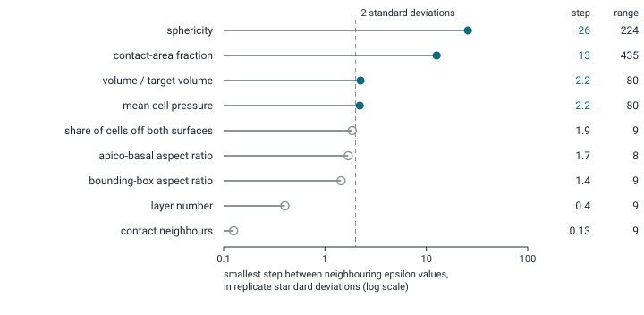
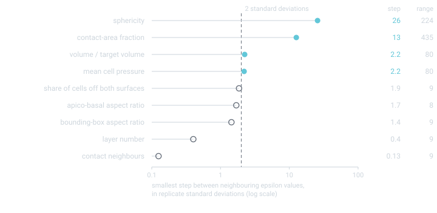

Reproducibility#
Scalar readouts of repeated runs agree to about a percent; topological readouts are noisier. No multi-cell run is bit-identical to its repeat, in 1.0 or in 2.1.0. All values below come from the November 2026 benchmark, three runs per build where stated (Method).
Replicate spread#
Readout |
Spread between repeats of one build |
|---|---|
Growth benchmark, wall time to 60,000 cells |
0 to 2.1% (coefficient of variation, per build) |
Growth benchmark, final cell count after 48 h, 2.1.0 |
about 2% (144,919, 148,914 and 142,314 cells) |
Vesicle, mean cell pressure |
0.1 to 1.0% |
Vesicle, median sphericity, 2.1.0 |
under 0.1% |
Vesicle, share of cells touching neither lumen nor shell |
3 to 25% |
Whether this noise matters depends on the size of the effect being measured. On the vesicle sweep, sphericity and contact-area fraction separate neighbouring values of ε by many replicate standard deviations; aspect ratios, layer number and neighbour count respond to ε across the sweep but cannot reliably tell neighbouring values apart from one run per value.


Parameter response against replicate noise, vesicle sweep, 2.1.0, five values of ε with three runs each. For each readout, the smallest change between neighbouring ε values divided by the pooled replicate standard deviation; the right column is the whole range over the same standard deviation. Above 2 (dashed), one run per value usually orders two neighbouring values correctly. Sphericity and contact-area fraction clear it by far; the shape and topology readouts do not.#


Parameter response against replicate noise, vesicle sweep, 2.1.0, five values of ε with three runs each. For each readout, the smallest change between neighbouring ε values divided by the pooled replicate standard deviation; the right column is the whole range over the same standard deviation. Above 2 (dashed), one run per value usually orders two neighbouring values correctly. Sphericity and contact-area fraction clear it by far; the shape and topology readouts do not.#
Two sources of non-determinism#
A random generator seeded from the wall clock. std::minstd_rand is seeded from
std::chrono::system_clock in src/mesh/cell.cpp (lines 178 and 192 at 2.1.0) and in
src/triangulation_modules/poisson_sampling.cpp (lines 133 and 205), in 1.0 as in 2.1.0. The
sampling places the points of the initial triangulation and of every new division interface
(called from src/triangulation_modules/cell_divider.cpp, line 642). Repeats of the growth
benchmark therefore differ from iteration 0, while there is still one cell. The benchmark files
ask for no random growth rates or division volumes; the randomness is in the meshing.
Threading. Runs differ even where nothing random is drawn. The vesicle starts from a given mesh and has no division, yet its repeats differ in mean pressure from the second sampled iteration (iteration 50). The likely cause is the order in which contact forces from several threads are summed, which changes the floating-point result; the mechanism has not been isolated. Force accumulation in contact models 0 and 1 is in addition not thread-safe (Limits of the model).
What is identical. The single-cell analytic cases, which ran once per build, write byte-identical statistics across 2.0, the four intermediate builds and 2.1.0. No multi-cell case is byte-identical between repeats.
To compare two configurations, run replicates and compare the difference with the replicate spread. There is no option in 2.1.0 to fix the seed.
Agreement between 1.0 and 2.x#
The same model, run by 1.0 (or 1.0 with two crash fixes, where 1.0 stops) and by the 2.x builds:
Growth benchmark at 10,000 cells, three runs per build:
Readout |
1.0 with two crash fixes |
2.1.0 |
Change |
|---|---|---|---|
Simulated time to reach it, cell cycles |
25.33 |
25.48 |
+0.6% |
Mean pressure, Pa |
2,362 |
2,374 |
+0.5% |
Volume / target volume |
0.568 |
0.545 |
−4.0% |
Sphericity |
0.918 |
0.913 |
−0.5% |
Deaths per birth |
0.247 |
0.236 |
−4.6% |
The four intermediate builds sit with 2.1.0, so the offset lies between 1.0 and the later builds, not in 2.1.0 specifically. 2.0 never reaches 10,000 cells. At this size 2 to 8% of the cells are already superposed in both versions (Limits of the model), so the table compares versions like for like; it is not a measurement of a packed tissue.
Vesicle and other tissues:
At ε = 1.5 and 2.0, 1.0 with two crash fixes and 2.1.0 agree to within 0.5% in pressure and 0.1% in sphericity. That is still more than the replicate spread for some readouts: median sphericity at ε = 2.0 differs by about three standard deviations.
The multilayer vesicle and the tube, which ran once per build, agree at the end to within the spread between builds. On the way the multilayer differs: 393 Pa in 1.0 at iteration 1,000 against 488 to 497 Pa in 2.x.
Two cases differ at the end. At ε = 3.0 the mean pressure is 444 to 446 Pa in 1.0 with two crash fixes (449 Pa in 1.0 when it stopped at iteration 48,097) and 348 to 355 Pa in every 2.x build, a gap of 93 Pa, about 30 times the replicate noise of 2.1.0. In the monolayer vesicle it is 20 Pa in 1.0 and in 1.0 with two crash fixes, against 25 to 27 Pa in 2.x.
A possible cause (inference, not tested). In 1.0, compute_node_triangle_distance
(src/contact_models/contact_model_abstract.cpp, line 237 at the v1.0 tag) adds vertex a
twice when the closest point lies inside a triangle (a + ab * v + a + ac * w). The computed
point is displaced by the position vector of that vertex, so contacts in face interiors fall
outside the cutoff and are not detected. 2.0 corrected the formula and tests it. In both cases that
differ, 1.0 detects less contact area from the first iterations: a contact-area fraction of 0.71
against 0.76 at ε = 3.0, and 0.03 against 0.06 in the monolayer. The deciding experiment, 1.0 with
only that line changed and rerun on those two cases, has not been run.
Analytic checks#
Single cell under surface tension. The pressure settles at 745.6 Pa. That matches the exact force balance for its polyhedral mesh to the four digits the output carries, and is 1.24% above 2γ/R for a sphere, the sphericity deficit of a 58-node mesh. The value is identical from 2.0 to 2.1.0.
Cell doublet. With the literature parameter set the contact angle settles at 122.7° by a sphere-fit estimate, against 120° from the Young–Dupré relation. At about 70 nodes per cell, two other estimators of the angle give 135 to 150°, so the result is close to 120° and no more precise than that.
1.0 cannot start these files: it stops at iteration 0 with the refinement error.